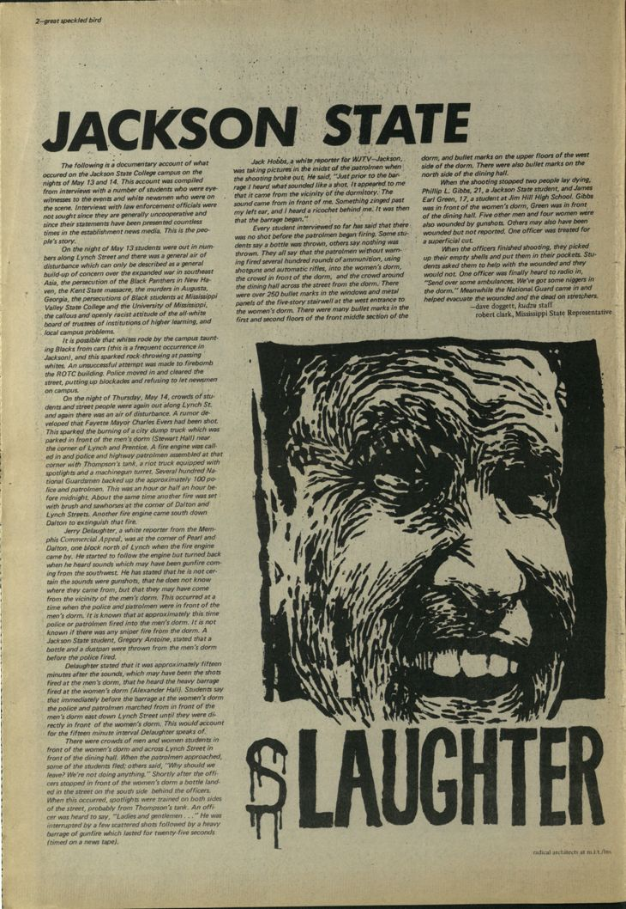
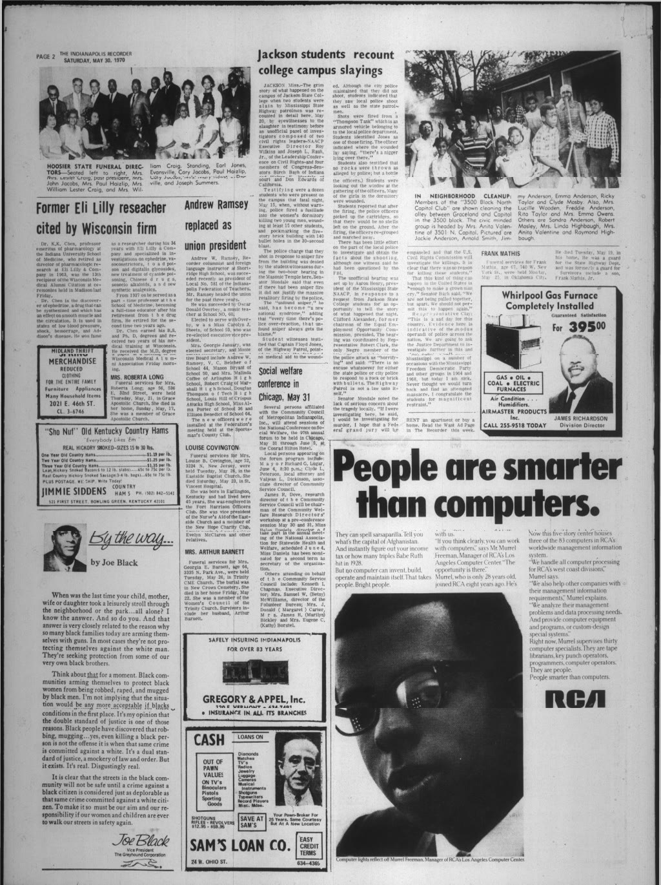

HN-680 · May 30, 1970 · Politics, Government & Diplomacy > Government Investigations & Abuse of Power > Oversight
Source: Indianapolis Recorder, p. 2 — original page.
Report: “Jackson students recount college campus slayings†summarized eyewitness testimony to an unofficial investigating panel with civil-rights leaders Roy Wilkins and Joseph Rauh, and members of Congress including Senators Birch Bayh and Walter Mondale.
Assessment: A crucial follow-up to the police account in HN-679. Eyewitness testimony is evidence of what witnesses said, while an unofficial inquiry is not a court verdict. Original transcripts, forensic evidence, and any formal review are needed before resolving conflicting claims about the shooting.
Identity-review candidate peers: HN-678:Algorithmic; HN-679:Algorithmic
Authentic images retrieved from Georgia State University Library (Great Speckled Bird exhibit) and Hoosier State Chronicles (Indiana State Library). Article crops are located using the archive's own OCR word coordinates and rendered at native crop resolution; article clips are assembled from the archive's own article-block images; page images marked "archive tiles" are stitched from the archive's own tiled page service at its 256-px tile cap; page images marked "issue PDF" are single pages rasterised from the archive's own issue PDF, with the page chosen by matching the headline against the PDF's text layer; page scans are reduced-size access renditions. No images were generated, mocked, or retouched.


Status: Archive images acquired
Authentic archive-owned image renditions were retrieved for this record and are displayed above. The source-acquisition manifest preserves the original pre-acquisition feasibility assessment.
URL (preserved verbatim): https://newspapers.library.in.gov/?a=d&d=INR19700530-01.1.2
Saved research report: Historical_Newspaper_Event_Research_678-702_2026-10-23.md
Evidence note: A newspaper report means a historical publication made a claim; it does not establish that claim as fact. Contemporary reporting is separated from later scholarly context and our own assessment.